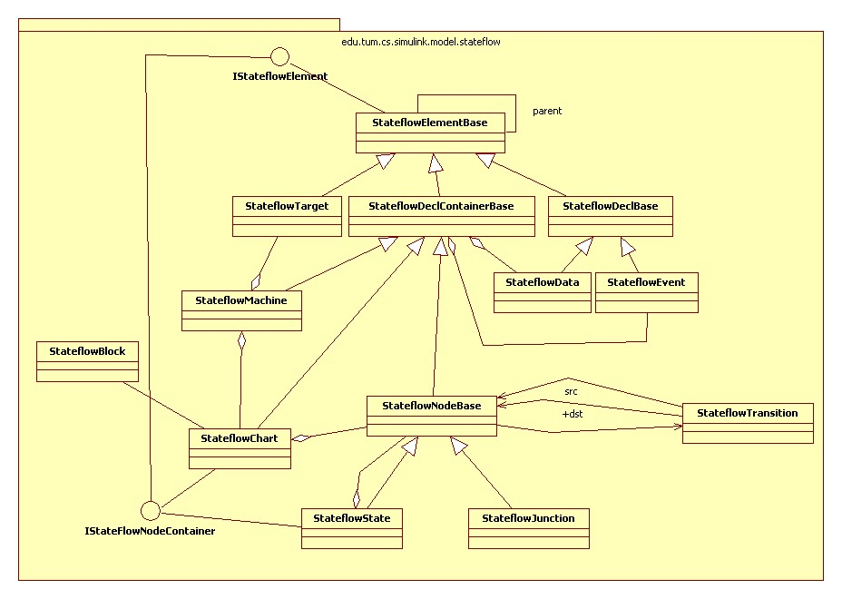

<!--  
  $Id: package.html 41763 2012-09-18 15:36:49Z kinnen $
  @version $Rev: 41763 $
  @ConQAT.Rating GREEN Hash: 578A6C129E6D7DF836A6FFE8631B1F63 
-->
<body>
This package contains the implementation of the Stateflow part of a 
Simulink model.

<p style="text-align:center">

</p>
</body>
